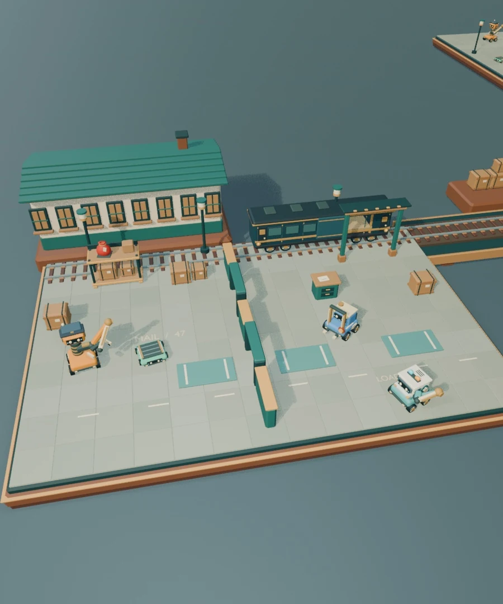

The executor updates facts as jobs run. Those links let the dispatcher trace what a change affects.
A fleet shares a delivery goal. The robots differ in height, reach and the tools they carry.
When a tool fails mid-delivery, the dispatcher must work out which jobs can still run.

The planner and executor share one embedded Relate file per dispatch. An action links to its assigned robot, the facts it needs and the work it depends on.
The executor updates facts as jobs run. Those links let the dispatcher trace what a change affects.
One language model (LLM) reads the goal and eligible robots with read_dispatch_graph. It uses propose_dag to submit a directed acyclic graph (DAG) of actions.
The fleet and depot exist before planning. The dispatch then adds proposals, plan revisions and a record of each handoff.
A draft specifies a job, an actor (or an open choice) and prerequisites for each action.
| Dependencies | The actions form an acyclic graph and each contributes to the goal. |
|---|---|
| Assignments | Z3 checks each chosen actor or picks one from the eligible set. |
| Preconditions | Each required fact already holds or follows from a declared predecessor. |
The service records each attempt. A failed check goes back to the LLM with a reason.
The goal is to release the train. The bag starts on the sorting shelf, and Coach B serves its destination.
An embodiment describes a robot’s body. For lifting, the chassis and a carriage mounted on that robot must support the same skill.
The load also checks reach, location and tray compatibility. The carriage must be online to execute it.
The first graph read returns the eligible robots for each job. The LLM chooses from those candidates.
JackForklift
PatchService crawler
| Job | Eligible in Relate | LLM choice |
|---|---|---|
| Load coach | Jack | Jack |
| Sign waybill | Jack or Patch | Jack |
Only Jack mounts a fork carriage. Both chassis support the scanning skill that the post desk accepts.
The first accepted plan has six actions. Each arrow runs from a prerequisite to the job it enables.
At each handoff the executor changes who holds the parcel in Relate. Departure waits for both branches.
At step 26 the executor marks the carriage offline. The dispatcher follows the precondition and dependency edges in Relate.
Two recordings start with the same order, fleet and carriage failure. Only the instrument mounted on Patch changes.
Fits the carriage’s hex collar.
Patch repairs → Jack loads
The validator accepts the proposed repair.
Fits a test socket.
Repair rejected → Skim uses the station lift
The LLM receives the failed check and proposes the lift.
When the carriage fails, signing is still pending. In both recordings the revised plan points to the original action and its assignment to Jack.
The three completed cargo actions also keep their identities. Four original actions survive in each run.
Nine robots work across three bays. The train release depends on three loads and three signatures.
When one fork carriage fails, the revised plan keeps 14 of the original 16 actions.